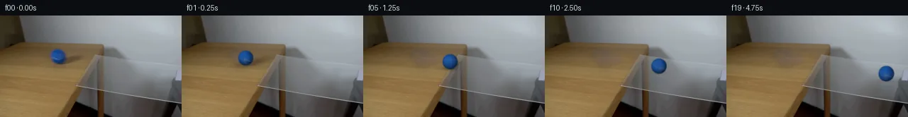

![首帧]()

Round 00
2026-11-04T21:37:45.770741+00:00像素候选变化代码 +206/−0inspection 更新
pixels 7f1a76911f18c183 · code e13accaacc110e75
查看本轮 generate.py 真实 diff
--- previous/generate.py
+++ current/generate.py
@@ -0,0 +1,206 @@
+"""Generate a local pixel continuation of the supplied scene, without external assets."""
+from pathlib import Path
+import json
+import numpy as np
+from PIL import Image, ImageDraw
+from scipy.ndimage import map_coordinates, gaussian_filter
+import cv2
+from artifact_io import save
+
+ROOT = Path(__file__).resolve().parent
+TMP = ROOT / '.tmp'
+TMP.mkdir(exist_ok=True)
+SOURCE = np.asarray(Image.open(ROOT / 'first_frame.png').convert('RGB'))
+H, W = SOURCE.shape[:2]
+CY0, CX0, R0 = 58.3, 81.7, 10.6
+Y, X = np.mgrid[:H, :W].astype(float)
+
+
+def smoothstep(a, b, v):
+ q = np.clip((v-a)/(b-a), 0., 1.)
+ return q*q*(3.-2.*q)
+
+
+def make_background():
+ # Remove only the source ball and the wood shadow it initially occludes.
+ ball = ((X-CX0)/12.5)**2 + ((Y-CY0)/12.2)**2 < 1
+ sx, sy = X-100., Y-63.
+ u = sx*.975 - sy*.222
+ v = sx*.222 + sy*.975
+ shadow = (u/23.)**2 + (v/6.6)**2 < 1
+ mask = ball | shadow
+ # Nearby wood is the only texture donor. A low order color correction fits
+ # the local tabletop gradient; feathering joins its existing grain.
+ donor = map_coordinates(SOURCE.astype(float), [Y[..., None]*np.ones(3),
+ np.clip(X-54., 0, W-1)[..., None]*np.ones(3),
+ np.broadcast_to(np.arange(3), (H,W,3))], order=1)
+ outside = cv2.dilate(mask.astype(np.uint8), np.ones((11,11),np.uint8)).astype(bool) & ~mask
+ outside &= (Y >= 44) & (Y <= 80) & (X >= 63) & (X <= 129)
+ xx, yy = (X-95.)/30., (Y-61.)/20.
+ features = np.stack([np.ones_like(X),xx,yy,xx*yy,xx*xx,yy*yy],axis=-1)
+ correction = np.empty((H,W,3))
+ for c in range(3):
+ coeff = np.linalg.lstsq(features[outside],(SOURCE.astype(float)-donor)[outside,c],rcond=None)[0]
+ correction[...,c] = features @ coeff
+ patch = np.clip(donor+correction,0,255)
+ # Smooth correction across the boundary, preserving real horizontal grain.
+ alpha = gaussian_filter(mask.astype(float), .75)
+ bg = SOURCE*(1-alpha[...,None]) + patch*alpha[...,None]
+ # Keep every pixel outside the small reconstruction footprint untouched.
+ footprint = cv2.dilate(mask.astype(np.uint8),np.ones((7,7),np.uint8)).astype(bool)
+ bg[~footprint] = SOURCE[~footprint]
+ return bg
+
+
+BACKGROUND = make_background()
+Image.fromarray(np.uint8(np.round(BACKGROUND))).save(TMP/'background.png')
+LIGHT = np.array([-.30,-.36,.88]); LIGHT /= np.linalg.norm(LIGHT)
+
+
+def light_value(n):
+ return .40 + .60*np.maximum(n @ LIGHT, 0)
+
+
+# Recover blue felt albedo from the visible hemisphere. This patch contains
+# only the source ball's own colors; background colors do not enter its core.
+ux, uy = (X-CX0)/R0, (Y-CY0)/R0
+uz = np.sqrt(np.maximum(0,1-ux*ux-uy*uy))
+source_light = light_value(np.stack([ux,uy,uz],axis=-1))
+source_alpha = 1-smoothstep(R0-.8,R0+.9,np.hypot(X-CX0,Y-CY0))
+unmixed = (SOURCE.astype(float)-BACKGROUND*(1-source_alpha[...,None])) / np.maximum(source_alpha[...,None],.2)
+albedo = np.clip(unmixed / np.maximum(source_light[...,None],.35),[6,30,70],[100,150,245])
+interior = (ux*ux+uy*uy < .50)
+BASE_BLUE = np.median(albedo[interior],axis=0)
+
+# A deterministic, smoothly varying three-dimensional felt texture supplies
+# only the unobserved reverse side of the ball; it is attached to the sphere.
+def felt_texture(n):
+ a,b,c = n[...,0],n[...,1],n[...,2]
+ noise = (.8*np.sin(53*a+29*b+37*c)+.7*np.sin(71*a-43*b+23*c)
+ +.5*np.sin(101*a+67*b-59*c))
+ broad = 1.1*np.sin(6*a-4*b+5*c)
+ tex = BASE_BLUE + (noise+broad)[...,None]*np.array([.65,1.,1.45])
+ # A faint curving continuous seam, consistent with the blue source seam.
+ seam_distance = b-.40*c+.16*a*c*(1-c)
+ seam = np.exp(-.5*(seam_distance/.043)**2)
+ tex += seam[...,None]*np.array([28.,17.,5.])
+ coords = [(CY0+R0*b).ravel(),(CX0+R0*a).ravel()]
… diff truncated; 119 more lines …